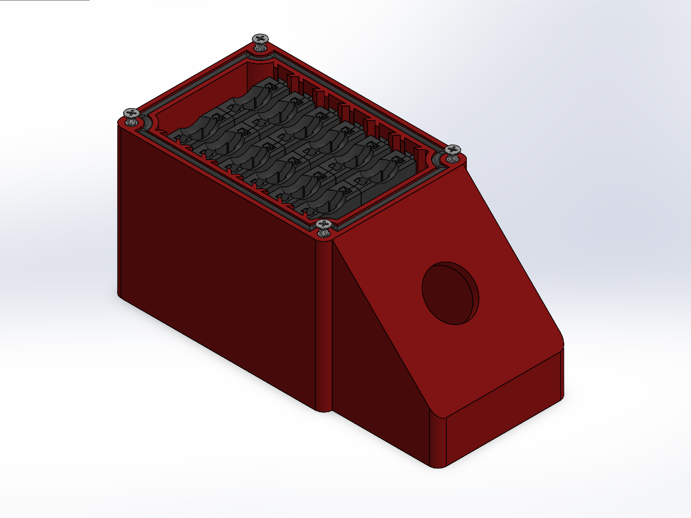
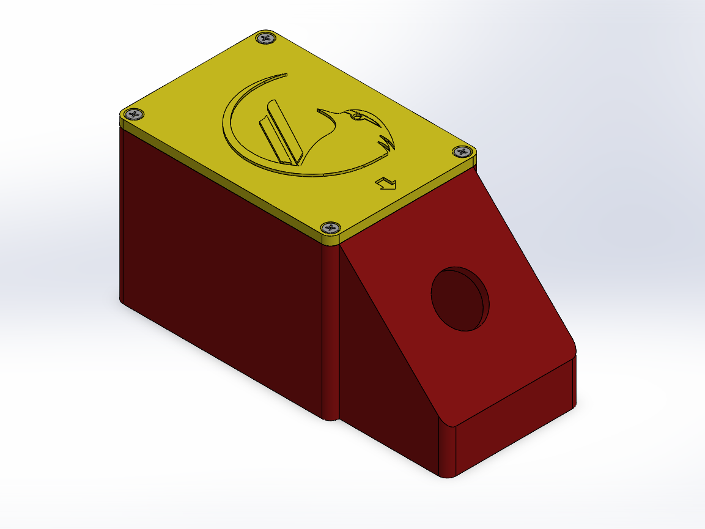

Render CAD (SolidWorks)
Render CAD (SolidWorks)Caixa de Fusíveis
- Ferramenta
- SolidWorks
- Função
- Proteção e organização dos circuitos do chicote
- Autoria
- Projeto 100% próprio
Projetei a caixa de fusíveis do veículo do zero utilizando o SolidWorks. Ela foi dimensionada para acomodar 12 fusíveis e integra um botão de emergência tipo cogumelo (kill switch) em sua face inclinada. O projeto previu o comportamento da peça em condições severas de prova, possui vedação com um anel de borracha contra água e poeira, dimensionamento estrutural para que a força de fixação seja igualmente distribuída, e cantos arredondados para mitigar o acúmulo de tensões mecânicas nas extremidades, evitando eventuais quebras por vibração.